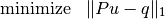
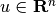
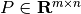
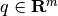
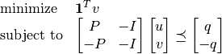
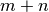
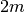
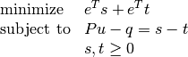
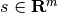
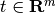

L1-norm approximation¶
The  -norm approximation problem is given by
-norm approximation problem is given by
(1)
with variable  and problem data  and . The problem is equivalent to an LP
(2)
with  variables and  constraints. Yet another equivalent formulation is the problem
(3)
with variables , , and .
Documentation
A custom solver for the -norm approximation problem is
available as a Python module l1.py. The module implements
the following four functions:
- l1blas(P, q)¶
Solves the problem (2) using a custom KKT solver. This function implements the same custom KKT solver as l1(), but it uses BLAS routines instead of overloaded arithmetic.
Returns the solution
.
Example
from l1 import l1
from cvxopt import normal
m, n = 500, 100
P, q = normal(m,n), normal(m,1)
u = l1(P,q)